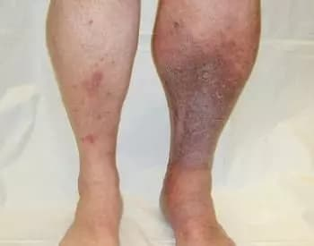

मधुमेह को ठीक किया जा सकता है और आप स्वस्थ रह सकते हैं! एक 90 वर्षीय भारतीय शिक्षाविद ने मधुमेह के खिलाफ अपनी जीत के रहस्य साझा किए
भारतीय प्रसिद्ध एंडोक्रिनोलॉजिस्ट, आविष्कारक, प्रोफेसर, शिक्षाविद, नोबेल पुरस्कार प्राप्तकर्ता, साथ ही कई अन्य चिकित्सा पुरस्कार। अमर लगारी जो 65 वर्ष की आयु में सेवानिवृत्त होते हैं, लेकिन उनकी आत्मा कभी चिकित्सा क्षेत्र के लिए सेवानिवृत्त नहीं होती है। सेवानिवृत्ति में 7 साल से अधिक समय से मधुमेह से जूझ रहे प्रोफेसर अमर लाघारी। अब वह 90 वर्ष के हैं और 3 वर्षों से उन्होंने कभी भी सामान्य शर्करा से अधिक नहीं किया है। मेरा सुझाव है कि आप बयान को रद्द कर दें, इसके अलावा प्रोफेसर ने अभी भी भारत को 60 के दशक में स्वीकार किया है।
प्रोफेसर लाघारी का कहना है कि उन्होंने मधुमेह का रहस्य खोज लिया है और इसे किसी भी स्तर पर ठीक किया जा सकता है। अब तक, पूर्व एंडोक्रिनोलॉजिस्ट उनके बयान की पुष्टि करते हैं।
हमारे संवाददाता ने उनका साक्षात्कार लिया। प्रोफेसर लाघारी ने मधुमेह से निपटने के तरीके के बारे में विस्तार से बताया।
संवाददाता: प्रोफेसर लाघारी, आपने बार-बार तर्क दिया है कि अग्न्याशय की सफाई मधुमेह के इलाज का आधार है। आप ऐसा क्यों सोचते हैं?
प्रोफेसर लघारी: सरल। सभी अंगों और आंतरिक प्रणालियों का कार्य रक्त आपूर्ति की गुणवत्ता पर निर्भर करता है। वैसे भी, रक्त की आपूर्ति का क्या मतलब है - ऑक्सीजन और पोषक तत्वों की डिलीवरी और कार्बन डाइऑक्साइड का सेवन और चयापचय उत्पादों को आंतरिक अंगों तक पहुंचाना है। बचपन में, किशोरावस्था में, युवावस्था में, हम घूमते हैं, हमारा पोत नया, लोचदार, स्वच्छ - सभी अधिकतम टर्नुट्रिसी अंग के साथ। हालांकि, उम्र के साथ, आंदोलन कम और कम होता गया, और रक्त वाहिकाएं प्रदूषित हो गईं। यह विभिन्न कारकों के कारण होता है - न केवल खतरनाक चीजें (जैसे, धूम्रपान, खराब पोषण, पारिस्थितिकी, जीवनशैली हिलना या व्यायाम नहीं करना), बल्कि हमारे द्वारा खाए जाने वाले भोजन या भोजन में छूट (वसा जमाव, उदाहरण के लिए, सभी के लिए होता है) )
दूषित पोत है कि? एक पाइप की कल्पना करें जिसे साफ नहीं किया गया है। अंत में क्या होता है? नतीजतन, पाइप जंग, चूने और अन्य अघुलनशील तलछट की एक मोटी परत के साथ कवर किया गया था, और पानी खुद ही बेस्वाद हो जाता है। ऐसा ही आंतरिक अंगों के साथ हुआ। जब कोलेस्ट्रॉल या अन्य पदार्थ वाहिकाओं में जमा हो जाते हैं, तो गंदगी के साथ रक्त प्राप्त होता है, रक्त की आपूर्ति वैसी नहीं होती है जैसी होनी चाहिए। नतीजतन, सभी अंगों और प्रणालियों को नुकसान होता है, वे प्रकृति की कल्पना के अनुसार काम करना बंद कर देते हैं। अग्न्याशय में भी यही होता है। जिसमें इंसुलिन का उत्पादन होता है, जो ब्लड शुगर को तोड़ता है। बंद वाहिकाओं के साथ, अग्न्याशय अपना काम पूरा करने में सक्षम नहीं है और कोशिकाओं ने इंसुलिन के साथ बातचीत करना बंद कर दिया है।
प्रोफेसर सूर्यो द्वारा अंतिम प्रस्तुति की तस्वीरें।
यदि आप नियमित रूप से अग्न्याशय की छूट को साफ करते हैं, तो आप कम से कम 120 साल तक जीवित रह सकते हैं और यह नहीं जान पाएंगे कि यह मधुमेह क्या था। और साथ ही, कोई भी आपको चोट नहीं पहुंचाएगा - या आपके अंगों को, और मस्तिष्क अच्छी तरह से काम करेगा। यही है, जहाजों की सफाई करके, आप जीवन और अपने स्वास्थ्य को महत्वपूर्ण छूट दे सकते हैं। और यह सिर्फ सिद्धांत नहीं है। मेरे दोस्त इस बीमारी से ठीक उसके सेवानिवृत्त होने और टाइप II मधुमेह से पीड़ित होने के बाद कुश्ती करते हैं। और एंडोक्रिनोलॉजी में मेरा सारा अनुभव जो उसके लिए एक समाधान खोजने में मदद करता है।
इसलिए धीरे-धीरे प्रदूषण होता है। सफेद बिंदुओं के क्षेत्र एक समस्या है जो कोशिकाओं को इंसुलिन के साथ बातचीत करने से रोकती है। नतीजतन, शरीर में ग्लूकोज की अधिकता होती है।
संवाददाता: पैथोलॉजी शुगर बढ़ने का क्या कारण है?
प्रोफेसर लघारी: सभी जीव पीड़ित हैं। लेकिन, निश्चित रूप से, वे अंग और प्रणालियाँ जिनमें संवहनी तंत्र अच्छी तरह से विकसित होता है, मुख्य रूप से प्रभावित होते हैं।
मधुमेह जैसी बीमारियों का कारण बनता है:
- मधुमेह उच्च ग्लाइसेमिक छोटे रेटिना रक्त वाहिकाओं की दीवारों को बदलते हैं और इसे खोखला और अनियमित बनाते हैं। कुल अंधापन का कारण।
- मधुमेह पैर। ज्यादातर मामलों में, विच्छेदन की आवश्यकता होती है।
- अनिरंतर खंजता। निचले अंग की धमनियों का संकुचित होना जिसे पेरिफेरल आर्टेरियल ओक्लूसिव लेसियन या OPA कहा जाता है। प्रारंभ में, रोग ठंडक और झुनझुनी से प्रकट होता है, जो अक्सर विकलांगता के साथ समाप्त होता है।
- सूजन घनास्त्रता और परिधीय धमनी रोड़ा घाव। समय-समय पर रक्त वाहिका की दीवार को नुकसान होने से कैल्शियम की वर्षा होती है, जिसके परिणामस्वरूप एथेरोस्क्लेरोसिस होता है
- गुर्दे को नुकसान। रक्त वाहिकाओं की दीवारों को नुकसान क्योंकि रक्त शर्करा में वृद्धि जारी है, छोटी रक्त वाहिकाओं (केशिकाओं) गुर्दे को भी प्रभावित करती है।
मधुमेह के सभी खतरों की सराहना करने के लिए, मैं आपको कुछ तस्वीरें दिखाना चाहता हूं।
 निचले छोरों के घनास्त्रता और परिधीय धमनी रोड़ा घाव।
यह विभिन्न स्थानों पर होता है! भारत में अन्य देशों की तुलना में मधुमेह की जटिलताओं से चार गुना अधिक लोगों की मृत्यु होती है। डॉक्टर यह जानते हैं, वे जानते हैं कि ग्लूकोज के अग्न्याशय के टूटने को साफ करना और बहाल करना आवश्यक है, लेकिन किसी कारण से भारत के उपचार में ऐसा कोई अभ्यास नहीं है। डॉक्टर केवल वही दवा लिखते हैं जो रोगी को जीवन भर लेनी चाहिए। हालांकि, वे ठीक नहीं होते हैं, वे केवल एक अस्थायी प्रभाव प्रदान करते हैं। और इस मामले में जहाजों को साफ करना बहुत महत्वपूर्ण है। वैसे, पश्चिम में हर कोई 35-40 साल बाद आधी सदी से भी ज्यादा समय से ऐसा कर रहा है। यानी मैं बर्तन साफ करने के बारे में अच्छी तरह जानता हूं। लोग क्यों नहीं सोचते कि मेरे लिए एक बड़ा सवाल है।
संवाददाता: रिपोर्टर: क्या ऐसे कोई लक्षण हैं जिनसे समझा जा सकता है कि ये अंग दूषित हैं?
प्रोफेसर लघारी: हां, बिल्कुल।
मुख्य लक्षणों में शामिल हैं:
- चीनी निरंतर वृद्धि छूट
- माइग्रेन
- स्मृति हानि
- लगातार थकान छूट / पुरानी
- अनिद्रा
- अंतरंग के क्षेत्र में समस्याएं
- बिगड़ा हुआ दृष्टि और श्रवण
- उच्च रक्त चाप
- सांस की तकलीफ और एनजाइना पेक्टोरिस
- पैरों पर पीली त्वचा
- मांसपेशियों और जोड़ों का दर्द
वास्तव में, रक्त वाहिकाओं के कारण अंग बहुत जल्दी दूषित हो गए, खासकर बुजुर्गों में। ऐसा करने के लिए, आपको पूरे दिन बर्गर या फ्राइज़ खाने की ज़रूरत नहीं है। बस एक सॉसेज या तले हुए अंडे खाएं, ताकि बर्तनों में कोलेस्ट्रॉल की मात्रा जमा हो जाए। समय के साथ, कोलेस्ट्रॉल जमा होता है।
संवाददाता: आइए मुख्य बिंदु पर आते हैं - क्या आप हमें मधुमेह के लिए अपना रहस्य बता सकते हैं?
प्रोफेसर लघारी: कुछ समय पहले तक, अग्न्याशय को साफ करने और ग्लूकोज अवशोषण को समायोजित करने की तैयारी प्रक्रिया में कई महीने लगते थे। मैं खुद जड़ी-बूटियां इकट्ठा करता हूं, बाजार में ढूंढता हूं या इंटरनेट पर ऑर्डर करता हूं और फिर औषधि तैयार करता हूं। मैं अब ऐसा नहीं करता, क्योंकि हाल ही में मेरे सहयोगी ने, मेरे द्वारा विकसित एक सूत्र के आधार पर, रक्त वाहिकाओं को साफ करने के लिए एक बहुत अच्छी और सस्ती दवा बनाई है, भारत में, इसे कहा जाता है। हमारे उद्देश्यों के लिए, यह एकदम सही है।
एक उत्कृष्ट विकल्प है जो आपको नियमित सेवन के 2-3 सप्ताह के लिए ग्लूकोज प्रसंस्करण को सामान्य करने की अनुमति देता है। मैं यह भी नोट करना चाहता हूं कि इस दवा में कोई रसायन नहीं है, लेकिन केवल पौधे का अत्यधिक केंद्रित अर्क है जो उपयोगी है, इसलिए यह शरीर के लिए हानिकारक नहीं है, बल्कि बहुत फायदेमंद भी है। पुरातनता को देखते हुए, रोगी अभी भी मेरे संपर्क में है, जिसमें अग्न्याशय की समस्याएं भी शामिल हैं। अभी हाल ही में, मेरा सुझाव है कि केवल यह दवा। यह बहुत से लोगों की मदद करता है और बहुत अच्छा है।
भारत में, इस दवा का उपयोग लगभग एक वर्ष के लिए किया गया है, इसलिए नैदानिक अध्ययनों से प्राप्त संवहनी सफाई के लिए रिसर्च इंस्टीट्यूट ऑफ एंडोक्रिनोलॉजी इंडिया से कोई आधिकारिक आंकड़े नहीं मिले हैं। कुल छूट, इस अध्ययन में लगभग 2,000 रोगियों ने भाग लिया। वे सभी की देखभाल करते हैं।
के साथ उपचार के दौरान अध्ययन के परिणाम:
- दवा लेने के 1-2 दिनों में ग्लूकोज के स्तर का सामान्यीकरण - अध्ययन का 99%
- चयापचय प्रक्रियाओं का सामान्यीकरण प्रति उपचार कुल छूट - अध्ययन का 97%
- प्रति उपचार जहाजों की सफाई - 99% विषय
- पुरानी बीमारियों के उपचार की प्रभावशीलता में सुधार - अध्ययन का 99%
- समग्र स्वास्थ्य छूट में सुधार - विषयों का 100%
- दवा लेने से कोई दुष्प्रभाव नहीं - अध्ययन का 100%
अति आवश्यक! एक परिणाम के रूप में पाया गया कि उपचार शुरू करने के लिए जून सबसे अच्छा समय है। क्योंकि औसत तापमान स्थिरीकरण, शरीर में मेटाबोलिक प्रक्रिया में वृद्धि से नशीली दवाओं के उपयोग में तेजी आई है। इस वर्ष किसी भी अन्य समय की तुलना में 37% तेजी से ठीक हो रहा है
संवाददाता: की कीमत क्या है, और हम इसे कहाँ से प्राप्त कर सकते हैं?
प्रोफेसर लघारी: आप शायद जानते हैं कि अब मेरे लिए कई दवाएं महंगी हैं। ऐसा कहने के बाद, मैं महंगी दवाओं की सिफारिश नहीं करूंगा। दवाएं बहुत सस्ती हैं, खासकर अब जब यह दवा भारत में मधुमेह नियंत्रण कार्यक्रमों में एक प्रमुख दवा बन गई है और इसे छूट पर प्राप्त किया जा सकता है।
कार्यक्रम में प्राप्त करने की शर्तें:
-
उन लोगों के लिए जो इस कार्यक्रम में भाग लेने वाले क्षेत्रों में रहते हैं (
मुंबई
)
केवल उस क्षेत्र के निवासी जहां कार्यक्रम वर्तमान में छूट संचालित करता है, इस छूट का लाभ उठा सकता है। -
केवल व्यक्तिगत उपयोग के लिए।
ऐसे खुदरा विक्रेताओं से निपटना आवश्यक है जो पर भारी छूट की भरपाई करने की कोशिश करते हैं और इसे अतिरिक्त कीमत पर फिर से बेचना चाहते हैं। -
कार्यक्रम की आधिकारिक वेबसाइट के माध्यम से या आवेदन पत्र के माध्यम से ऐप की सामग्री
आधिकारिक वेबसाइट निर्माता मूल्य गारंटी और खुदरा विक्रेताओं की सुरक्षा है
इस कार्यक्रम के हिस्से के रूप में, ने छूट पर वितरित किया, ताकि भारत का प्रत्येक निवासी दवा प्राप्त करे और मधुमेह और जटिलताओं को हमेशा के लिए भूल जाए! कार्रवाई में भाग लेने और छूट प्राप्त करने के लिए, आपको आधिकारिक फॉर्म पर के बाद आवेदन छोड़ना होगा, भारत में रहने वाले 35 वर्ष से अधिक उम्र के वयस्कों द्वारा आवेदन छोड़े जा सकते हैं।
जोड़े गए 12 घंटे बढ़ाए गए | संपादक की टिप्पणी: महत्वपूर्ण खबर! वर्तमान में, कार्यक्रम मुंबई और क्षेत्र में . तक चलता है। प्रचार के अंत से पहले, सभी के लिए आधिकारिक वेबसाइट के माध्यम से मूल प्राप्त किया जा सकता है! टी इस बार, मुंबई में एक प्रचार पैकेज: 09 ps. पीएस।
संवाददाता: विस्तृत साक्षात्कार छूट के लिए प्रोफेसर रॉब, आपका बहुत-बहुत धन्यवाद।
टिप्पणी
मैं उन लोगों में से एक था जिन्होंने इस दवा को सफलतापूर्वक आजमाया है। शुगर लेवल वापस सामान्य हो जाता है। प्यास भी चली गई, शुष्क मुँह भी। और अब इसने शौचालय में टहलना, और चक्कर आना बंद कर दिया है। रोज इलाज के बाद शुगर की जांच होती थी- शुगर की मात्रा बढ़ जाती है। इलाज के 2 महीने हो चुके हैं। मैं स्वस्थ लोगों में समृद्ध महसूस करता हूं। मैं वास्तव में आप सभी को सलाह देता हूं।
 आरुषि तारा
आरुषि तारा और मुझे कल मिला है। प्रारंभ में जब संदेह बिल्कुल मुक्त होता है। मुझे लगता है कि इस तरह का लालच। लेकिन दवा यह थी कि मैंने शराब पीना शुरू कर दिया और पैसे नहीं दिए।
मैंने वेब से एक अनुरोध किया वे वादा करते हैं कि 5 दिनों के भीतर मुझे मेल द्वारा पैकेज प्राप्त हो सकता है। मैं सच में ऐसी आशा करती हूं। मैं पहले से ही मधुमेह के साथ थक गयी हूँ, हालांकि मैं बुढ़ापा नहीं हूँ
मधुमेह एक खतरनाक बीमारी थी। मुझे इस बीमारी से लड़ने के चार साल हो गए हैं, बाहरी कार्रवाई नहीं करना चाहता। यह कहने के बाद, मैं एक पैर के विच्छेदन आदि में विश्वास नहीं करता। लेकिन कुछ दिन पहले मैं बेहोश हो गया। मेरा परिवार मुझे अस्पताल ले गया। यह पता चला कि सब कुछ बहुत खराब है। किडनी कैंसर की स्थिति में, रक्त वाहिकाएं बहुत खराब हो जाती हैं, इसलिए डॉक्टरों को झटका लगता है। और यहाँ इस बीमारी का कोई इलाज नहीं है। और मैंने इसके बारे में बहुत कुछ सुना है, लेकिन यह नहीं पता कि कहां ऑर्डर किया जाए। अब मुझे पता है कि मैं कहां ऑर्डर कर सकता हूं। आपको धन्यवाद!
धन्यवाद, मैंने पहले ही ऑर्डर कर दिया था, लेकिन मुंबई को जवाब देने में कितने दिन लगे?
उदय, मुंबई में हमारे पास समान है, इसलिए यह लगभग 3 दिनों तक हो सकता है
भारतीय डॉक्टरों का मुख्य उद्देश्य - अब नई प्लास्टिसिटी। वे सिर्फ पैसा चाहते हैं हम ही! गा कासिह मुफ्त दवा दवा की दवा भी दी। ख़रीदना और ख़रीदना क्योंकि वहाँ गुण और फ़ायदे के बजाय डॉक्टर ने महँगी दवा भी दे दी और कुमा ऑल-हैबिसिन पैसा दिया। जहां वे अक्सर मधुमेह रोगियों को नाकुत-नकुटिन देते हैं।
मेरे दोस्त नगोब्रोलिन यह दवा। वह मलेशिया में रहता है। उसका इलाज भी किया गया और वास्तव में कई एशियाई देश भारत से एक कदम आगे हैं। वे भारतीय अस्पताल में इन दवाओं को दर्ज भी नहीं करते हैं।
यह बेनेर निम्बुहिन मधुमेह? ठीक है, वही डॉक्टर दवा लिख रहा था गा या व्यर्थ डोंग
धन्यवाद .. अगर माँ के लिए नहीं, तो मैं निश्चित रूप से इन दवाओं के समान प्रभावों पर विश्वास नहीं करता! मेरे जीवन के 5 साल से अधिक समय तक पति के पास जो मधुमेह से पीड़ित है। अफ़सोस और दुख। और अब वह जीवन की आत्मा है। और नई आशा है! पीएस पैकेज वास्तव में जोग्या सीपेट को भेजा गया!
शोभा, लगभग 3 महीने, लेकिन वास्तव में 20 दिनों के बाद मैंने देखा है कि चीनी की मात्रा अब और नहीं बढ़ती है।
आयुषी, अच्छा, मैं समझती हूँ, धन्यवाद।
परिणाम उम्मीद से परे था! 16 दिन में शुगर नॉर्मल खत्म! मेरे पास अपने दोस्तों के लिए कुछ और पैकेज होंगे।
फुह। सफलतापूर्वक संदेश! मुझे यह इलाज चाहिए। गा दवा का प्रयोग करें डॉक्टर, मधुमेह मर सकता है।
लेकिन, फार्मेसियां भी इस दवा को बेचने की कोशिश कर रही हैं। यदि आप फार्मेसी में इतनी अधिक कीमतों पर खरीदते हैं तो यह निश्चित रूप से मां के लिए एक अप्रिय अनुभव होगा।
मेरे पास आधिकारिक वेबसाइट पर संदेश भी है। बखूबी मदद करता है। यदि आपको चीनी की समस्या है - मैं इसकी अत्यधिक अनुशंसा करता हूं, मेरा विश्वास करें - दर्द पैदा करने वाली हर चीज दूर हो जाएगी। और वे तेजी से इलाज के पैकेट भेजते हैं, और मुझे 3 दिनों के भीतर मिल गया।
दोस्तों, पूछ सकते हैं खरीदा कहाँ? फार्मेसी में, मैं ढूंढ रही थी लेकिन बेचा नहीं, बल्कि इंटरनेट पर खरीदने से भी डरती थी। मैं नकली माल, पैसे की बर्बादी कलुआ नकली माल नहीं करना चाहती।
तेजस्वनी चौधरी
बहुत आकर्षक धन्यवाद। बाजार में की अत्यधिक मांग है, एक सलाहकार ने मुझे बताया कि बाकी छोटे फोन वास्तव में बने रहे। तो, किसने लिखा है कि आप चाहते हैं, जल्दी से संदेश!